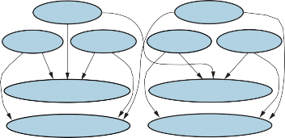
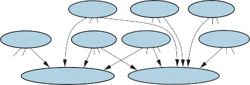
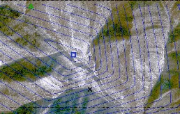
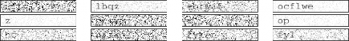
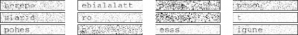
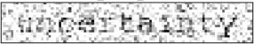
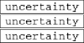
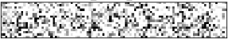
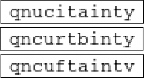
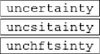

CHAPTER 18
PROBABILISTIC PROGRAMMING
In which we explain the idea of universal languages for probabilistic knowledge represen-
tation and inference in uncertain domains.
The spectrum of representations—atomic, factored, and structured—has been a persistent
theme in AI. For deterministic models, search algorithms assume only an atomic represen-
tation; CSPs and propositional logic provide factored representations; and first-order logic
and planning systems take advantage of structured representations. The expressive power
afforded by structured representations yields models that are vastly more concise than the
equivalent factored or atomic descriptions.
For probabilistic models, Bayesian networks as described in Chapters 13 and 14 are fac-
tored representations: the set of random variables is fixed and finite, and each has a fixed
range of possible values. This fact limits the applicability of Bayesian networks, because the
Bayesian network representation for a complex domain is simply too large. This makes it
infeasible to construct such representations by hand and infeasible to learn them from any
reasonable amount of data.
The problem of creating an expressive formal language for probabilistic information has
taxed some of the greatest minds in history, including Gottfried Leibniz (the co-inventor of
calculus), Jacob Bernoulli (discoverer of e, the calculus of variations, and the Law of Large
Numbers), Augustus De Morgan, George Boole, Charles Sanders Peirce (one of the principal
logicians of the 19th century), John Maynard Keynes (the leading economist of the 20th
century), and Rudolf Carnap (one of the greatest analytical philosophers of the 20th century).
The problem resisted these and many other efforts until the 1990s.
Thanks in part to the development of Bayesian networks, there are now mathematically
elegant and eminently practical formal languages that allow the creation of probabilistic mod-
els for very complex domains. These languages are universal in the same sense that Turing
machines are universal: they can represent any computable probability model, just as Turing
machines can represent any computable function. In addition, these languages come with
general-purpose inference algorithms, roughly analogous to sound and complete logical in-
ference algorithms such as resolution.
There are two routes to introducing expressive power into probability theory. The first
is via logic: to devise a language that defines probabilities over first-order possible worlds,
rather than the propositional possible worlds of Bayes nets. This route is covered in Sec-
tions 18.1 and 18.2, with Section 18.3 covering the specific case of temporal reasoning. The
second route is via traditional programming languages: we introduce stochastic elements—
random choices, for example—into such languages, and view programs as defining probabil-
ity distributions over their own execution traces. This approach is covered in Section 18.4.
642 Chapter 18 Probabilistic Programming

R J R J
R J R J
R J R J


R
J
R
J
R
J
R
J
R
J
R J R J R J R J R J
Figure 18.1 Top: Some members of the set of all possible worlds for a language with two
constant symbols, R and J, and one binary relation symbol, under the standard semantics for
first-order logic. Bottom: the possible worlds under database semantics. The interpretation
of the constant symbols is fixed, and there is a distinct object for each constant symbol.
Probabilistic
programming
Both routes lead to a probabilistic programming language (PPL). The first route leads
language (PPL) to declarative PPLs, which bear roughly the same relationship to general PPLs as logic pro-
gramming (Chapter 9) does to general programming languages.
Recall from Chapter 12 that a probability model defines a set Ω of possible worlds with
a probability P(ω) for each world ω. For Bayesian networks, the possible worlds are as-
signments of values to variables; for the Boolean case in particular, the possible worlds are
identical to those of propositional logic.
For a first-order probability model, then, it seems we need the possible worlds to be those
of first-order logic—that is, a set of objects with relations among them and an interpretation
that maps constant symbols to objects, predicate symbols to relations, and function symbols to
functions on those objects. (See Section 8.2.) The model also needs to define a probability for
each such possible world, just as a Bayesian network defines a probability for each assignment
of values to variables.
Let us suppose, for a moment, that we have figured out how to do this. Then, as usual
(see page 407), we can obtain the probability of any first-order logical sentence φ (phi) as a
sum over the possible worlds where it is true:
P(φ) = ∑
ω:φ is true in ω
P(ω) . (18.1)
|
Conditional probabilities P(φ e) can be obtained similarly, so we can, in principle, ask any
question we want of our model—and get an answer. So far, so good.
There is, however, a problem: the set of first-order models is infinite. We saw this ex-
plicitly in Figure 8.4 on page 277, which we show again in Figure 18.1 (top). This means
that (1) the summation in Equation (18.1) could be infeasible, and (2) specifying a complete,
consistent distribution over an infinite set of worlds could be very difficult.
Section 18.1 Relational Probability Models 643
Quality(B1)
Honest(C1) Kindness(C1)
Recommendation(C1, B1)
Quality(B1)
Quality(B2)
Honest(C1) Kindness(C1)
Honest(C2) Kindness(C2)
Recommendation(C1, B1)
Recommendation(C2, B1)
Recommendation(C1, B2)
Recommendation(C2, B2)

(a) (b)
Figure 18.2 (a) Bayes net for a single customer C1 recommending a single book B1.
Honest(C1) is Boolean, while the other variables have integer values from 1 to 5. (b) Bayes
net with two customers and two books.
In this section, we avoid this issue by considering the database semantics defined in
Section 8.2.8 (page 282). The database semantics makes the unique names assumption—
here, we adopt it for the constant symbols. It also assumes domain closure—there are no
more objects beyond those that are named. We can then guarantee a finite set of possible
worlds by making the set of objects in each world be exactly the set of constant symbols that
are used; as shown in Figure 18.1 (bottom), there is no uncertainty about the mapping from
symbols to objects or about the objects that exist.
probability model
We will call models defined in this way relational probability models, or RPMs.1 The Relational
most significant difference between the semantics of RPMs and the database semantics intro-
duced in Section 8.2.8 is that RPMs do not make the closed-world assumption—in a proba-
bilistic reasoning system we can’t just assume that every unknown fact is false.
Let us begin with a simple example: suppose that an online book retailer would like to pro-
vide overall evaluations of products based on recommendations received from its customers.
The evaluation will take the form of a posterior distribution over the quality of the book, given
the available evidence. The simplest solution is to base the evaluation on the average recom-
mendation, perhaps with a variance determined by the number of recommendations, but this
fails to take into account the fact that some customers are kinder than others and some are
less honest than others. Kind customers tend to give high recommendations even to fairly
mediocre books, while dishonest customers give very high or very low recommendations for
reasons other than quality—they might be paid to promote some publisher’s books.2
For a single customer C1 recommending a single book B1, the Bayes net might look like
the one shown in Figure 18.2(a). (Just as in Section 9.1, expressions with parentheses such
as Honest(C1) are just fancy symbols—in this case, fancy names for random variables.) With
1 The name relational probability model was given by Pfeffer (2000) to a slightly different representation, but
the underlying ideas are the same.
2 A game theorist would advise a dishonest customer to avoid detection by occasionally recommending a good
book from a competitor. See Chapter 17.
644 Chapter 18 Probabilistic Programming
Type signature
Basic random
variable
two customers and two books, the Bayes net looks like the one in Figure 18.2(b). For larger
numbers of books and customers, it is quite impractical to specify a Bayes net by hand.
Fortunately, the network has a lot of repeated structure. Each Recommendation(c, b) vari-
able has as its parents the variables Honest(c), Kindness(c), and Quality(b). Moreover, the
conditional probability tables (CPTs) for all the Recommendation(c, b) variables are identi-
cal, as are those for all the Honest(c) variables, and so on. The situation seems tailor-made
for a first-order language. We would like to say something like
Recommendation(c, b) ∼ RecCPT(Honest(c), Kindness(c), Quality(b))
which means that a customer’s recommendation for a book depends probabilistically on the
customer’s honesty and kindness and the book’s quality according to a fixed CPT.
Like first-order logic, RPMs have constant, function, and predicate symbols. We will also
assume a type signature for each function—that is, a specification of the type of each argu-
ment and the function’s value. (If the type of each object is known, many spurious possible
worlds are eliminated by this mechanism; for example, we need not worry about the kindness
of each book, books recommending customers, and so on.) For the book-recommendation
domain, the types are Customer and Book, and the type signatures for the functions and pred-
icates are as follows:
Honest : Customer → {true, false}
Kindness : Customer → {1, 2, 3, 4, 5}
Quality : Book → {1, 2, 3, 4, 5}
Recommendation : Customer×Book → {1, 2, 3, 4, 5}
The constant symbols will be whatever customer and book names appear in the retailer’s data
set. In the example given in Figure 18.2(b), these were C1, C2 and B1, B2.
Given the constants and their types, together with the functions and their type signatures,
the basic random variables of the RPM are obtained by instantiating each function with
each possible combination of objects. For the book recommendation model, the basic random
variables include Honest(C1), Quality(B2), Recommendation(C1, B2), and so on. These are
exactly the variables appearing in Figure 18.2(b). Because each type has only finitely many
instances (thanks to the domain closure assumption), the number of basic random variables
is also finite.
To complete the RPM, we have to write the dependencies that govern these random vari-
ables. There is one dependency statement for each function, where each argument of the
function is a logical variable (i.e., a variable that ranges over objects, as in first-order logic).
For example, the following dependency states that, for every customer c, the prior probability
of honesty is 0.99 true and 0.01 false:
Honest(c) ∼ ⟨0.99, 0.01⟩
Similarly, we can state prior probabilities for the kindness value of each customer and the
quality of each book, each on the 1–5 scale:
Kindness(c) ∼ ⟨0.1, 0.1, 0.2, 0.3, 0.3⟩
Quality(b) ∼ ⟨0.05, 0.2, 0.4, 0.2, 0.15⟩
Finally, we need the dependency for recommendations: for any customer c and book b, the
score depends on the honesty and kindness of the customer and the quality of the book:
Recommendation(c, b) ∼ RecCPT(Honest(c), Kindness(c), Quality(b))
Section 18.1 Relational Probability Models 645
× ×
2
2
where RecCPT is a separately defined conditional probability table with 2 5 5 = 50 rows,
each with 5 entries. For the purposes of illustration, we’ll assume that an honest recommen-
dation for a book of quality q from a person of kindness k is uniformly distributed in the range
[[ q+k ♩,[ q+k |].
The semantics of the RPM can be obtained by instantiating these dependencies for all
known constants, giving a Bayesian network (as in Figure 18.2(b)) that defines a joint distri-
bution over the RPM’s random variables.3
The set of possible worlds is the Cartesian product of the ranges of all the basic ran-
dom variables, and, as with Bayesian networks, the probability for each possible world is
the product of the relevant conditional probabilities from the model. With C customers and
B books, there are C Honest variables, C Kindness variables, B Quality variables, and BCvariables, leading to 2C5C+B+BC possible worlds. With ten million books
and a billion customers, that’s about 107×1015 worlds. Thanks to the expressive power of
RPMs, the complete probability model still has only fewer than 300 parameters—most of
them in the RecCPT table.
We can refine the model by asserting a context-specific independence (see page 438) to
reflect the fact that dishonest customers ignore quality when giving a recommendation; more-
over, kindness plays no role in their decisions. Thus, Recommendation(c, b) is independent
of Kindness(c) and Quality(b) when Honest(c) = false:
~
Recommendation(c, b) if Honest(c) then
HonestRecCPT(Kindness(c), Quality(b))
else ⟨0.4, 0.1, 0.0, 0.1, 0.4⟩.
This kind of dependency may look like an ordinary if–then–else statement in a programming
language, but there is a key difference: the inference engine doesn’t necessarily know the
value of the conditional test because Honest(c) is a random variable.
We can elaborate this model in endless ways to make it more realistic. For example,
suppose that an honest customer who is a fan of a book’s author always gives the book a 5,
regardless of quality:
~
Recommendation(c, b) if Honest(c) then
if Fan(c, Author(b)) then Exactly(5)
else HonestRecCPT(Kindness(c), Quality(b))
else ⟨0.4, 0.1, 0.0, 0.1, 0.4⟩
Again, the conditional test Fan(c, Author(b)) is unknown, but if a customer gives only 5s to a
particular author’s books and is not otherwise especially kind, then the posterior probability
that the customer is a fan of that author will be high. Furthermore, the posterior distribution
will tend to discount the customer’s 5s in evaluating the quality of that author’s books.
In this example, we implicitly assumed that the value of Author(b) is known for every
b, but this may not be the case. How can the system reason about whether, say, C1 is a fan
of Author(B2) when Author(B2) is unknown? The answer is that the system may have to
reason about all possible authors. Suppose (to keep things simple) that there are just two
3 Some technical conditions are required for an RPM to define a proper distribution. First, the dependencies must
be acyclic; otherwise the resulting Bayesian network will have cycles. Second, the dependencies must (usually)
be well-founded: there can be no infinite ancestor chains, such as might arise from recursive dependencies. See
Exercise 18.HAMD for an exception to this rule.
646 Chapter 18 Probabilistic Programming
Fan(C1, A1)
Fan(C1, A2)
Author(B2)
Quality(B1)
Honest(C1) Kindness(C1)
Quality(B2)
Recommendation(C1, B1)
Recommendation(C1, B2)

Figure 18.3 Fragment of the equivalent Bayes net for the book recommendation RPM when
Author(B2) is unknown.
Multiplexer
Relational
uncertainty
Rating
authors, A1 and A2. Then Author(B2) is a random variable with two possible values, A1 and
A2, and it is a parent of Recommendation(C1, B2). The variables Fan(C1, A1) and Fan(C1, A2)
are parents too. The conditional distribution for Recommendation(C1, B2) is then essentially a
multiplexer in which the Author(B2) parent acts as a selector to choose which of Fan(C1, A1)
and Fan(C1, A2) actually gets to influence the recommendation. A fragment of the equivalent
Bayes net is shown in Figure 18.3. Uncertainty in the value of Author(B2), which affects the
dependency structure of the network, is an instance of relational uncertainty.
In case you are wondering how the system can possibly work out who the author of B2 is:
consider the possibility that three other customers are fans of A1 (and have no other favorite
authors in common) and all three have given B2 a 5, even though most other customers find
it quite dismal. In that case, it is extremely likely that A1 is the author of B2. The emergence
of sophisticated reasoning like this from an RPM model of just a few lines is an intriguing
example of how probabilistic influences spread through the web of interconnections among
objects in the model. As more dependencies and more objects are added, the picture conveyed
by the posterior distribution often becomes clearer and clearer.
Many competitive games have a numerical measure of players’ skill levels, sometimes called
a rating. Perhaps the best-known is the Elo rating for chess players, which rates a typical be-
ginner at around 800 and the world champion usually somewhere above 2800. Although Elo
ratings have a statistical basis, they have some ad hoc elements. We can develop a Bayesian
rating scheme as follows: each player i has an underlying skill level Skill(i); in each game g,
i’s actual performance is Performance(i, g), which may vary from the underlying skill level;
and the winner of g is the player whose performance in g is better. As an RPM, the model
looks like this:
~ N
Skill(i) (µ, σ2)
~ N
Performance(i, g) (Skill(i), β2)
Win(i, j, g) = if Game(g, i, j) then (Performance(i, g) > Performance( j, g))
where β2 is the variance of a player’s actual performance in any specific game relative to the
player’s underlying skill level. Given a set of players and games, as well as outcomes for
some of the games, an RPM inference engine can compute a posterior distribution over the
skill of each player and the probable outcome of any additional game that might be played.
Section 18.1 Relational Probability Models 647
For team games, we’ll assume, as a first approximation, that the overall performance of
team t in game g is the sum of the individual performances of the players on t:
TeamPerformance(t, g) = ∑i∈t Performance(i, g) .
Even though the individual performances are not visible to the ratings engine, the players’
skill levels can still be estimated from the results of several games, as long as the team com-
positions vary across games. Microsoft’s TrueSkillTM ratings engine uses this model, along
with an efficient approximate inference algorithm, to serve hundreds of millions of users
every day.
This model can be elaborated in numerous ways. For example, we might assume that
weaker players have higher variance in their performance; we might include the player’s role
on the team; and we might consider specific kinds of performance and skill—e.g., defending
and attacking—in order to improve team composition and predictive accuracy.
The most straightforward approach to inference in RPMs is simply to construct the equivalent
Bayesian network, given the known constant symbols belonging to each type. With B books
and C customers, the basic model given previously could be constructed with simple loops:4
for b = 1 to B do
⟨ ⟩
add node Qualityb with no parents, prior 0.05, 0.2, 0.4, 0.2, 0.15
for c = 1 to C do
⟨ ⟩
add node Honestc with no parents, prior 0.99, 0.01
⟨ ⟩
add node Kindnessc with no parents, prior 0.1, 0.1, 0.2, 0.3, 0.3
for b = 1 to B do
add node Recommendationc,b with parents Honestc, Kindnessc, Qualityb
and conditional distribution RecCPT(Honestc, Kindnessc, Qualityb)
This technique is called grounding or unrolling; it is the exact analog of propositionaliza- Grounding
tion for first-order logic (page 298). The obvious drawback is that the resulting Bayes net
may be very large. Furthermore, if there are many candidate objects for an unknown relation
or function—for example, the unknown author of B2—then some variables in the network
may have many parents.
Fortunately, it is often possible to avoid generating the entire implicit Bayes net. As we
saw in the discussion of the variable elimination algorithm on page 451, every variable that is
not an ancestor of a query variable or evidence variable is irrelevant to the query. Moreover, if
the query is conditionally independent of some variable given the evidence, then that variable
is also irrelevant. So, by chaining through the model starting from the query and evidence,
we can identify just the set of variables that are relevant to the query. These are the only ones
that need to be instantiated to create a potentially tiny fragment of the implicit Bayes net.
Inference in this fragment gives the same answer as inference in the entire implicit Bayes net.
Another avenue for improving the efficiency of inference comes from the presence of re-
peated substructure in the unrolled Bayes net. This means that many of the factors constructed
during variable elimination (and similar kinds of tables constructed by clustering algorithms)
4 Several statistical packages would view this code as defining the RPM, rather than just constructing a Bayes
net to perform inference in the RPM. This view, however, misses an important role for RPM syntax: without a
syntax with clear semantics, there is no way the model structure can be learned from data.
Unrolling
648 Chapter 18 Probabilistic Programming
will be identical; effective caching schemes have yielded speedups of three orders of magni-
tude for large networks.
Third, MCMC inference algorithms have some interesting properties when applied to
RPMs with relational uncertainty. MCMC works by sampling complete possible worlds,
so in each state the relational structure is completely known. In the example given earlier,
each MCMC state would specify the value of Author(B2), and so the other potential authors
are no longer parents of the recommendation nodes for B2. For MCMC, then, relational
uncertainty causes no increase in network complexity; instead, the MCMC process includes
transitions that change the relational structure, and hence the dependency structure, of the
unrolled network.
Finally, it may be possible in some cases to avoid grounding the model altogether. Reso-
lution theorem provers and logic programming systems avoid propositionalizing by instanti-
ating the logical variables only as needed to make the inference go through; that is, they liftthe inference process above the level of ground propositional sentences and make each lifted
step do the work of many ground steps.
The same idea can be applied in probabilistic inference. For example, in the variable
elimination algorithm, a lifted factor can represent an entire set of ground factors that assign
probabilities to random variables in the RPM, where those random variables differ only in the
constant symbols used to construct them. The details of this method are beyond the scope of
this book, but references are given at the end of the chapter.
Sybil
We argued earlier that database semantics was appropriate for situations in which we know
exactly the set of relevant objects that exist and can identify them unambiguously. (In partic-
ular, all observations about an object are correctly associated with the constant symbol that
names it.) In many real-world settings, however, these assumptions are simply untenable.
For example, a book retailer might use an ISBN (International Standard Book Number) as a
constant symbol to name each book, even though a given “logical” book (e.g., “Gone With
the Wind”) may have several ISBNs corresponding to hardcover, paperback, large print, reis-
sues, and so on. It would make sense to aggregate recommendations across multiple ISBNs,
but the retailer may not know for sure which ISBNs are really the same book. (Note that we
are not reifying the individual copies of the book, which might be necessary for used-book
sales, car sales, and so on.) Worse still, each customer is identified by a login ID, but a dis-
honest customer may have thousands of IDs! In the computer security field, these multiple
IDs are called sybils and their use to confound a reputation system is called a sybil attack.5
Sybil attack Thus, even a simple application in a relatively well-defined, online domain involves both ex-
Existence
uncertainty
Identity uncertainty
The phenomena of existence and identity uncertainty extend far beyond online book-
sellers. In fact they are pervasive:
A vision system doesn’t know what exists, if anything, around the next corner, and may
not know if the object it sees now is the same one it saw a few minutes ago.
5 The name “Sybil” comes from a famous case of multiple personality disorder.
Section 18.2 Open-Universe Probability Models 649
A text-understanding system does not know in advance the entities that will be featured
in a text, and must reason about whether phrases such as “Mary,” “Dr. Smith,” “she,”
“his cardiologist,” “his mother,” and so on refer to the same object.
An intelligence analyst hunting for spies never knows how many spies there really are
and can only guess whether various pseudonyms, phone numbers, and sightings belong
to the same individual.
Indeed, a major part of human cognition seems to require learning what objects exist and
being able to connect observations—which almost never come with unique IDs attached—to
hypothesized objects in the world.
Thus, we need to be able to define an open universe probability model (OUPM) based
on the standard semantics of first-order logic, as illustrated at the top of Figure 18.1. A
language for OUPMs provides a way of easily writing such models while guaranteeing a
unique, consistent probability distribution over the infinite space of possible worlds.
The basic idea is to understand how ordinary Bayesian networks and RPMs manage to define
a unique probability model and to transfer that insight to the first-order setting. In essence,
a Bayes net generates each possible world, event by event, in the topological order defined
by the network structure, where each event is an assignment of a value to a variable. An
RPM extends this to entire sets of events, defined by the possible instantiations of the logical
variables in a given predicate or function. OUPMs go further by allowing generative steps that
add objects to the possible world under construction, where the number and type of objects
may depend on the objects that are already in that world and their properties and relations.
That is, the event being generated is not the assignment of a value to a variable, but the very
existence of objects.
Open universe
probability model
(OUPM)
One way to do this in OUPMs is to provide number statements that specify condi- Number statement
tional distributions over the numbers of objects of various kinds. For example, in the book-
recommendation domain, we might want to distinguish between customers (real people) and
their login IDs. (It’s actually login IDs that make recommendations, not customers!) Suppose
(to keep things simple) the number of customers is uniform between 1 and 3 and the number
of books is uniform between 2 and 4:
# Customer ∼ UniformInt(1, 3)
# Book ∼ UniformInt(2, 4) . (18.2)
We expect honest customers to have just one ID, whereas dishonest customers might have
anywhere between 2 and 5 IDs:
# LoginID(Owner = c) ∼ if Honest(c) then Exactly(1)
else UniformInt(2, 5) . (18.3)
This number statement specifies the distribution over the number of login IDs for which
customer c is the Owner. The Owner function is called an origin function because it says Origin function
where each object generated by this number statement came from.
The example in the preceding paragraph uses a uniform distribution over the integers
between 2 and 5 to specify the number of logins for a dishonest customer. This particular
distribution is bounded, but in general there may not be an a priori bound on the number of
650 Chapter 18 Probabilistic Programming
Poisson distribution
Discrete log-normal
distribution
Order-of-magnitude
objects. The most commonly used distribution over the nonnegative integers is the Poisson. The Poisson has one parameter, λ, which is the expected number of objects,
and a variable X sampled from Poisson(λ) has the following distribution:
P(X = k) = λke−λ/k! .
The variance of the Poisson is also λ, so the standard deviation is √λ. This means that
for large values of λ, the distribution is narrow relative to the mean—for example, if the
number of ants in a nest is modeled by a Poisson with a mean of one million, the standard
deviation is only a thousand, or 0.1%. For large numbers, it often makes more sense to use
the discrete log-normal distribution, which is appropriate when the log of the number of
objects is normally distributed. A particularly intuitive form, which we call the order-of-
magnitude distribution, uses logs to base 10: thus, a distribution OM(3, 1) has a mean of
distribution 103 and a standard deviation of one order of magnitude, i.e., the bulk of the probability mass
falls between 102 and 104.
⟨ ⟩
⟨ ⟨ ⟨ ⟩⟩ ⟩
The formal semantics of OUPMs begins with a definition of the objects that populate
possible worlds. In the standard semantics of typed first-order logic, objects are just num-
bered tokens with types. In OUPMs, each object is a generation history; for example, an
object might be “the fourth login ID of the seventh customer.” (The reason for this slightly
baroque construction will become clear shortly.) For types with no origin functions—e.g.,
the Customer and Book types in Equation (18.2)—the objects have an empty origin; for ex-
ample, Customer, , 2 refers to the second customer generated from that number statement.
For number statements with origin functions—e.g., Equation (18.3)—each object records its
origin; for example, the object LoginID, Owner, Customer, , 2 , 3 is the third login be-
longing to the second customer.
Number variable
The number variables of an OUPM specify how many objects there are of each type with
each possible origin in each possible world; thus #LoginID⟨Owner,⟨Customer,,2⟩⟩(ω) = 4 means
that in world ω, customer 2 owns 4 login IDs. As in relational probability models, the basicdetermine the values of predicates and functions for all tuples of objects;
thus, Honest⟨Customer,,2⟩(ω) = true means that in world ω, customer 2 is honest. A possible
world is defined by the values of all the number variables and basic random variables. A
world may be generated from the model by sampling in topological order; Figure 18.4 shows
an example. The probability of a world so constructed is the product of the probabilities
for all the sampled values; in this case, 1.2672 10−11. Now it becomes clear why each
object contains its origin: this property ensures that every world can be constructed by exactly
one generation sequence. If this were not the case, the probability of a world would be an
unwieldy combinatorial sum over all possible generation sequences that create it.
×
Open-universe models may have infinitely many random variables, so the full theory in-
volves nontrivial measure-theoretic considerations. For example, number statements with
Poisson or order-of-magnitude distributions allow for unbounded numbers of objects, lead-
ing to unbounded numbers of random variables for the properties and relations of those ob-
jects. Moreover, OUPMs can have recursive dependencies and infinite types (integers, strings,
etc.). Finally, well-formedness disallows cyclic dependencies and infinitely receding ancestor
chains; these conditions are undecidable in general, but certain syntactic sufficient conditions
can be checked easily.
Section 18.2 Open-Universe Probability Models 651
Variable Value Probability
#Customer 2 0.3333
#Book 3 0.3333
Honest⟨Customer,,1⟩ true 0.99
Honest⟨Customer,,2⟩ false 0.01
Kindness⟨Customer,,1⟩ 4 0.3
Kindness⟨Customer,,2⟩ 1 0.1
Quality⟨Book,,1⟩ 1 0.05
Quality⟨Book,,2⟩ 3 0.4
Quality⟨Book,,3⟩ 5 0.15
#LoginID⟨Owner,⟨Customer,,1⟩⟩ 1 1.0
#LoginID⟨Owner,⟨Customer,,2⟩⟩ 2 0.25
Recommendation⟨LoginID,⟨Owner,⟨Customer,,1⟩⟩,1⟩,⟨Book,,1⟩ 2 0.5
Recommendation⟨LoginID,⟨Owner,⟨Customer,,1⟩⟩,1⟩,⟨Book,,2⟩ 4 0.5
Recommendation⟨LoginID,⟨Owner,⟨Customer,,1⟩⟩,1⟩,⟨Book,,3⟩ 5 0.5
Recommendation⟨LoginID,⟨Owner,⟨Customer,,2⟩⟩,1⟩,⟨Book,,1⟩ 5 0.4
Recommendation⟨LoginID,⟨Owner,⟨Customer,,2⟩⟩,1⟩,⟨Book,,2⟩ 5 0.4
Recommendation⟨LoginID,⟨Owner,⟨Customer,,2⟩⟩,1⟩,⟨Book,,3⟩ 1 0.4
Recommendation⟨LoginID,⟨Owner,⟨Customer,,2⟩⟩,2⟩,⟨Book,,1⟩ 5 0.4
Recommendation⟨LoginID,⟨Owner,⟨Customer,,2⟩⟩,2⟩,⟨Book,,2⟩ 5 0.4
Recommendation⟨LoginID,⟨Owner,⟨Customer,,2⟩⟩,2⟩,⟨Book,,3⟩ 1 0.4
Figure 18.4 One particular world for the book recommendation OUPM. The number vari-
ables and basic random variables are shown in topological order, along with their chosen
values and the probabilities for those values.
Because of the potentially huge and sometimes unbounded size of the implicit Bayes net that
corresponds to a typical OUPM, unrolling it fully and performing exact inference is quite
impractical. Instead, we must consider approximate inference algorithms such as MCMC
(see Section 13.4.2).
Roughly speaking, an MCMC algorithm for an OUPM is exploring the space of possible
worlds defined by sets of objects and relations among them, as illustrated in Figure 18.1(top).
A move between adjacent states in this space can not only alter relations and functions but
also add or subtract objects and change the interpretations of constant symbols. Even though
each possible world may be huge, the probability computations required for each step—
whether in Gibbs sampling or Metropolis–Hastings—are entirely local and in most cases
take constant time. This is because the probability ratio between neighboring worlds depends
on a subgraph of constant size around the variables whose values are changed. Moreover, a
logical query can be evaluated incrementally in each world visited, usually in constant time
per world, rather than being recomputing from scratch.
Some special consideration needs to be given to the fact that a typical OUPM may have
possible worlds of infinite size. As an example, consider the multitarget tracking model in
Figure 18.9: the function X (a,t), denoting the state of aircraft a at time t, corresponds to
an infinite sequence of variables for an unbounded number of aircraft at each step. For this
reason, MCMC for OUPMs samples not completely specified possible worlds but partial
652 Chapter 18 Probabilistic Programming
worlds, each corresponding to a disjoint set of complete worlds. A partial world is a minimal
self-supporting instantiation6 of a subset of the relevant variables—that is, ancestors of the
evidence and query variables. For example, variables X (a, t) for values of t greater than the
last observation time (or the query time, whichever is greater) are irrelevant, so the algorithm
can consider just a finite prefix of the infinite sequence.
The standard “use case” for an OUPM has three elements: the model, the evidence (the
known facts in a given scenario), and the query, which may be any expression, possibly
with free logical variables. The answer is a posterior joint probability for each possible set
of substitutions for the free variables, given the evidence, according to the model.7 Every
model includes type declarations, type signatures for the predicates and functions, one or
more number statements for each type, and one dependency statement for each predicate and
function. (In the examples below, declarations and signatures are omitted where the meaning
is clear.) As in RPMs, dependency statements use an if-then-else syntax to handle context-
specific dependencies.
Citation matching
Millions of academic research papers and technical reports are to be found online in the
form of pdf files. Such papers usually contain a section near the end called “References” or
“Bibliography,” in which citations—strings of characters—are provided to inform the reader
of related work. These strings can be located and “scraped” from the pdf files with the aim of
creating a database-like representation that relates papers and researchers by authorship and
citation links. Systems such as CiteSeer and Google Scholar present such a representation to
their users; behind the scenes, algorithms operate to find papers, scrape the citation strings,
and identify the actual papers to which the citation strings refer. This is a difficult task because
these strings contain no object identifiers and include errors of syntax, spelling, punctuation,
and content. To illustrate this, here are two relatively benign examples:
[Lashkari et al 94] Collaborative Interface Agents, Yezdi Lashkari, Max Metral, and
Pattie Maes, Proceedings of the Twelfth National Conference on Articial Intelligence,
MIT Press, Cambridge, MA, 1994.
Metral M. Lashkari, Y. and P. Maes. Collaborative interface agents. In Conference of
the American Association for Artificial Intelligence, Seattle, WA, August 1994.
The key question is one of identity: are these citations of the same paper or different pa-
pers? Asked this question, even experts disagree or are unwilling to decide, indicating that
reasoning under uncertainty is going to be an important part of solving this problem.8 Ad hoc
approaches—such as methods based on a textual similarity metric—often fail miserably. For
example, in 2002, CiteSeer reported over 120 distinct books written by Russell and Norvig.
6 A self-supporting instantiation of a set of variables is one in which the parents of every variable in the set are
also in the set.
7 As with Prolog, there may be infinitely many sets of substitutions of unbounded size; designing exploratory
interfaces for such answers is an interesting visualization challenge.
8 The answer is yes, they are the same paper. The “National Conference on Articial Intelligence” (notice how
the “fi” is missing, thanks to an error in scraping the ligature character) is another name for the AAAI conference;
the conference took place in Seattle whereas the proceedings publisher is in Cambridge.
Section 18.2 Open-Universe Probability Models 653
type Researcher, Paper, Citation
random String Name(Researcher)
random String Title(Paper)
random Paper PubCited(Citation)
random String Text(Citation)
random Boolean Professor(Researcher)
origin Researcher Author(Paper)
#Researcher ∼ OM(3, 1)
Name(r) ∼ NamePrior()
Professor(r) ∼ Boolean(0.2)
#Paper(Author = r) ∼ if Professor(r) then OM(1.5, 0.5) else OM(1, 0.5)
Title(p) ∼ PaperTitlePrior()
CitedPaper(c) ∼ UniformChoice({Paper p})
Text(c) ∼ HMMGrammar(Name(Author(CitedPaper(c))), Title(CitedPaper(c)))
Figure 18.5 An OUPM for citation information extraction. For simplicity the model assumes
one author per paper and omits details of the grammar and error models.
In order to solve the problem using a probabilistic approach, we need a generative model
for the domain. That is, we ask how these citation strings come to be in the world. The
process begins with researchers, who have names. (We don’t need to worry about how the
researchers came into existence; we just need to express our uncertainty about how many
there are.) These researchers write some papers, which have titles; people cite the papers,
combining the authors’ names and the paper’s title (with errors) into the text of the citation
according to some grammar. The basic elements of this model are shown in Figure 18.5,
covering the case where papers have just one author.9
Given just citation strings as evidence, probabilistic inference on this model to pick
out the most likely explanation for the data produces an error rate 2 to 3 times lower than
CiteSeer’s (Pasula et al., 2003). The inference process also exhibits a form of collective,
knowledge-driven disambiguation: the more citations for a given paper, the more accurately
each of them is parsed, because the parses have to agree on the facts about the paper.
Nuclear treaty monitoring
Verifying the Comprehensive Nuclear-Test-Ban Treaty requires finding all seismic events on
Earth above a minimum magnitude. The UN CTBTO maintains a network of sensors, the
International Monitoring System (IMS); its automated processing software, based on 100
years of seismology research, has a detection failure rate of about 30%. The NET-VISA
system (Arora et al., 2013), based on an OUPM, significantly reduces detection failures.
The NET-VISA model (Figure 18.6) expresses the relevant geophysics directly. It de-
scribes distributions over the number of events in a given time interval (most of which are
9 The multi-author case has the same overall structure but is a bit more complicated. The parts of the model
not shown—the NamePrior, rTitlePrior, and HMMGrammar—are traditional probability models. For exam-
ple, the NamePrior is a mixture of a categorical distribution over actual names and a letter trigram model (see
Section 24.1) to cover names not previously seen, both trained from data in the U.S. Census database.
654 Chapter 18 Probabilistic Programming
~
~
~ ∗
#SeismicEvents Poisson(T λe)
Time(e) UniformReal(0, T )
EarthQuake(e) Boolean(0.999)
~
~
~
Location(e) if Earthquake(e) then SpatialPrior() else UniformEarth()
Depth(e) if Earthquake(e) then UniformReal(0, 700) else Exactly(0)
Magnitude(e) Exponential(log(10))
~
Detected(e, p, s) Logistic(weights(s, p), Magnitude(e), Depth(e), Dist(e, s))
~ ∗
#Detections(site = s) Poisson(T λf (s))
#Detections(event=e, phase=p, station=s) = if Detected(e, p, s) then 1 else 0
~
OnsetTime(a, s) if (event(a) = null) then UniformReal(0, T )
else = Time(event(a)) + GeoTT(Dist(event(a), s), Depth(event(a)), phase(a))
+ Laplace(µt(s), σt(s))
~
Amplitude(a, s) if (event(a) = null) then NoiseAmpModel(s)
~
else = AmpModel(Magnitude(event(a)), Dist(event(a), s), Depth(event(a)), phase(a))
Azimuth(a, s) if (event(a) = null) then UniformReal(0, 360)
else = GeoAzimuth(Location(event(a)), Depth(event(a)), phase(a), Site(s))
+ Laplace(0, σa(s))
~
Slowness(a, s) if (event(a) = null) then UniformReal(0, 20)
else = GeoSlowness(Location(event(a)), Depth(event(a)), phase(a), Site(s))
+ Laplace(0, σs(s))
ObservedPhase(a, s) ∼ CategoricalPhaseModel(phase(a))
Figure 18.6 A simplified version of the NET-VISA model (see text).
naturally occurring) as well as over their time, magnitude, depth, and location. The locations
of natural events are distributed according to a spatial prior that is trained (like other parts
of the model) from historical data; man-made events are, by the treaty rules, assumed to oc-
cur uniformly over the surface of the Earth. At every station s, each phase (seismic wave
type) p from an event e produces either 0 or 1 detections (above-threshold signals); the detec-
tion probability depends on the event magnitude and depth and its distance from the station.
“False alarm” detections also occur according to a station-specific rate parameter. The mea-
sured arrival time, amplitude, and other properties of a detection d from a real event depend
on the properties of the originating event and its distance from the station.
Once trained, the model runs continuously. The evidence consists of detections (90% of
which are false alarms) extracted from raw IMS waveform data, and the query typically asks
for the most likely event history, or bulletin, given the data. Results so far are encouraging;
for example, in 2009 the UN’s SEL3 automated bulletin missed 27.4% of the 27294 events
in the magnitude range 3–4 while NET-VISA missed 11.1%. Moreover, comparisons with
dense regional networks show that NET-VISA finds up to 50% more real events than the
final bulletins produced by the UN’s expert seismic analysts. NET-VISA also tends to as-
sociate more detections with a given event, leading to more accurate location estimates (see
Figure 18.7). As of January 1, 2018, NET-VISA has been deployed as part of the CTBTO
monitoring pipeline.
Despite superficial differences, the two examples are structurally similar: there are un-
known objects (papers, earthquakes) that generate percepts according to some physical pro-
Section 18.3 Keeping Track of a Complex World 655
ASAR – se
30

20
1.0 - 2.0 Hz
10
0
– 10
– 20
– 300 100 200 300 400 500 600
+ 1.1040359× 109
5
STA (1.5s) / LTA (60s)
4
3
2
1
0
– 10 100
200 300 400
Time (s)
(a)
500 600
+ 1.1040359× 109
(b)
Figure 18.7 (a) Top: Example of seismic waveform recorded at Alice Springs, Australia.
Bottom: the waveform after processing to detect the arrival times of seismic waves. Blue lines
are the automatically detected arrivals; red lines are the true arrivals. (b) Location estimates
for the DPRK nuclear test of February 12, 2013: UN CTBTO Late Event Bulletin (green
triangle at top left); NET-VISA (blue square in center). The entrance to the underground
test facility (small “x”) is 0.75km from NET-VISA’s estimate. Contours show NET-VISA’s
posterior location distribution. Courtesy of CTBTO Preparatory Commission.
cess (citation, seismic propagation). The percepts are ambiguous as to their origin, but when
multiple percepts are hypothesized to have originated with the same unknown object, that
object’s properties can be inferred more accurately.
The same structure and reasoning patterns hold for areas such as database deduplication
and natural language understanding. In some cases, inferring an object’s existence involves
grouping percepts together—a process that resembles the clustering task in machine learning.
In other cases, an object may generate no percepts at all and still have its existence inferred—
as happened, for example, when observations of Uranus led to the discovery of Neptune. The
existence of the unobserved object follows from its effects on the behavior and properties of
observed objects.
Chapter 14 considered the problem of keeping track of the state of the world, but covered
only the case of atomic representations (HMMs) and factored representations (DBNs and
Kalman filters). This makes sense for worlds with a single object—perhaps a single patient
in the intensive care unit or a single bird flying through the forest. In this section, we see what
happens when two or more objects generate the observations. What makes this case different
from plain old state estimation is that there is now the possibility of uncertainty about which
object generated which observation. This is the identity uncertainty problem of Section 18.2
(page 648), now viewed in a temporal context. In the control theory literature, this is the data
that generated them. Although we could view this as yet another example of open-universe
probabilistic modeling, it is important enough in practice to deserve its own section.
656 Chapter 18 Probabilistic Programming
1
5
2
4
3
2
1
3
4
5
(a)
1
5
2
4
3
2
1
3
4
5
(b)


1
5
2
4
3
2
1
3
4
5
(c)
track termination
1
5
2
3
2
4
detection
failure
4
1
3
false alarm
track
initiation
5
(d)


Figure 18.8 (a) Observations made of object locations in 2D space over five time steps. Each
observation blip is labeled with the time step but does not identify the object that produced it.
(b–c) Possible hypotheses about the underlying object tracks. (d) A hypothesis for the case
in which false alarms, detection failures, and track initiation/termination are possible.
Guaranteed object
—
The data association problem was studied originally in the context of radar tracking of mul-
tiple targets, where reflected pulses are detected at fixed time intervals by a rotating radar
antenna. At each time step, multiple blips may appear on the screen, but there is no direct
observation of which blips at time t correspond to which blips at time t 1. Figure 18.8(a)
shows a simple example with two blips per time step for five steps. Each blip is labeled with
its time step but lacks any identifying information.
Let us assume, for the time being, that we know there are exactly two aircraft, A1 and
A2, generating the blips. In the terminology of OUPMs, A1 and A2 are guaranteed objects,
meaning that they are guaranteed to exist and to be distinct; moreover, in this case, there
are no other objects. (In other words, as far as aircraft are concerned, this scenario matches
the database semantics that is assumed in RPMs.) Let their true positions be X (A1,t) and
X (A2,t), where t is a nonnegative integer that indexes the sensor update times. We assume
the first observation arrives at t = 1, and at time 0 the prior distribution for every aircraft’s
location is InitX(). Just to keep things simple, we’ll also assume that each aircraft moves
independently according to a known transition model—e.g., a linear–Gaussian model as used
in the Kalman filter (Section 14.4).
The final piece is the sensor model: again, we assume a linear–Gaussian model where an
aircraft at position x produces a blip b whose observed blip position Z(b) is a linear function
of x with added Gaussian noise. Each aircraft generates exactly one blip at each time step, so
Section 18.3 Keeping Track of a Complex World 657
#Aircraft(EntryTime =t) ∼ Poisson(λa)
Exits(a, t) ∼ if InFlight(a, t) then Boolean(αe)
InFlight(a, t) = (t=EntryTime(a)) ∨ (InFlight(a, t − 1) ∧ ¬ Exits(a, t − 1))
X (a, t) ∼ if t = EntryTime(a) then InitX()
else if InFlight(a, t) then N (F X (a, t − 1), Σx)
#Blip(Source=a, Time=t) ∼ if InFlight(a, t) then Bernoulli(DetectionProb(X (a, t)))
#Blip(Time=t) ∼ Poisson(λf )
Z(b) ∼ if Source(b)=null then UniformZ(R) else N (H X (Source(b), Time(b)), Σz)
Figure 18.9 An OUPM for radar tracking of multiple targets with false alarms, detection
failure, and entry and exit of aircraft. The rate at which new aircraft enter the scene is λa,
while the probability per time step that an aircraft exits the scene is αe. False alarm blips (i.e.,
ones not produced by an aircraft) appear uniformly in space at a rate of λf per time step. The
probability that an aircraft is detected (i.e., produces a blip) depends on its current position.
the blip has as its origins an aircraft and a time step. So, omitting the prior for now, the model
looks like this:
guaranteed Aircraft A1, A2
~ N −
X (a, t) if t = 0 then InitX() else (F X (a, t 1), Σx)
#Blip(Source=a, Time=t) = 1
Z(b) ∼ N (H X (Source(b), Time(b)), Σz)
where F and Σx are matrices describing the linear transition model and transition noise co-
variance, and H and Σz are the corresponding matrices for the sensor model. (See page 501.)
The key difference between this model and a standard Kalman filter is that there are
two objects producing sensor readings (blips). This means there is uncertainty at any given
time step about which object produced which sensor reading. Each possible world in this
model includes an association—defined by values of all the Source(b) variables for all the
time steps—between aircraft and blips. Two possible association hypotheses are shown in
Figure 18.8(b–c). In general, for n objects and T time steps, there are (n!)T ways of assigning
blips to aircraft—an awfully large number.
The scenario described so far involved n known objects generating n observations at
each time step. Real applications of data association are typically much more complicated.
Often, the reported observations include false alarms (also known as clutter), which are not False alarm
caused by real objects. Detection failures can occur, meaning that no observation is reported
for a real object. Finally, new objects arrive and old ones disappear. These phenomena,
which create even more possible worlds to worry about, are illustrated in Figure 18.8(d). The
corresponding OUPM is given in Figure 18.9.
Because of its practical importance for both civilian and military applications, tens of
thousands of papers have been written on the problem of multitarget tracking and data as-
sociation. Many of them simply try to work out the complex mathematical details of the
probability calculations for the model in Figure 18.9, or for simpler versions of it. In one
sense, this is unnecessary once the model is expressed in a probabilistic programming lan-
guage, because the general-purpose inference engine does all of the mathematics correctly for
any model—including this one. Furthermore, elaborations of the scenario (formation flying,
Clutter
Detection failure
658 Chapter 18 Probabilistic Programming
Nearest-neighbor
filter
Hungarian algorithm
objects heading for unknown destinations, objects taking off or landing, etc.) can be han-
dled by small changes to the model without resorting to new mathematical derivations and
complex programming.
—
From a practical point of view, the challenge with this kind of model is the complexity
of inference. As for all probability models, inference means summing out the variables other
than the query and the evidence. For filtering in HMMs and DBNs, we were able to sum out
the state variables from 1 to t 1 by a simple dynamic programming trick; for Kalman filters,
we also took advantage of special properties of Gaussians. For data association, we are less
fortunate. There is no (known) efficient exact algorithm, for the same reason that there is none
for the switching Kalman filter (page 502): the filtering distribution, which describes the joint
distribution over numbers and locations of aircraft at each time step, ends up as a mixture of
exponentially many distributions, one for each way of picking a sequence of observations to
assign to each aircraft.
As a response to the complexity of exact inference, several approximate methods have
been used. The simplest approach is to choose a single “best” assignment at each time step,
given the predicted positions of the objects at the current time. This assignment associates
observations with objects and enables the track of each object to be updated and a prediction
made for the next time step. For choosing the “best” assignment, it is common to use the
so-called nearest-neighbor filter, which repeatedly chooses the closest pairing of predicted
position and observation and adds that pairing to the assignment. The nearest-neighbor filter
works well when the objects are well separated in state space and the prediction uncertainty
and observation error are small—in other words, when there is no possibility of confusion.
When there is more uncertainty as to the correct assignment, a better approach is to
choose the assignment that maximizes the joint probability of the current observations given
the predicted positions. This can be done efficiently using the Hungarian algorithm (Kuhn,
1955), even though there are n! assignments to choose from as each new time step arrives.
Any method that commits to a single best assignment at each time step fails miserably
under more difficult conditions. In particular, if the algorithm commits to an incorrect assign-
ment, the prediction at the next time step may be significantly wrong, leading to more incor-
rect assignments, and so on. Sampling approaches can be much more effective. A particlealgorithm (see page 510) for data association works by maintaining a large collec-
tion of possible current assignments. An MCMC algorithm explores the space of assignment
histories—for example, Figure 18.8(b–c) might be states in the MCMC state space—and can
change its mind about previous assignment decisions.
One obvious way to speed up sampling-based inference for multitarget tracking is to use
the Rao-Blackwellization trick from Chapter 14 (page 514): given a specific association
hypothesis for all the objects, the filtering calculation for each object can typically be done
exactly and efficiently, instead of sampling many possible state sequences for the objects.
For example, with the model in Figure 18.9, the filtering calculation just means running
a Kalman filter for the sequence of observations assigned to a given hypothesized object.
Furthermore, when changing from one association hypothesis to another, the calculations
have to be redone only for objects whose associated observations have changed. Current
MCMC data association methods can handle many hundreds of objects in real time while
giving a good approximation to the true posterior distributions.
Section 18.3 Keeping Track of a Complex World 659
(a) (b)
Figure 18.10 Images from (a) upstream and (b) downstream surveillance cameras roughly
two miles apart on Highway 99 in Sacramento, California. The boxed vehicle has been
identified at both cameras.
Figure 18.10 shows two images from widely separated cameras on a California freeway. In
this application, we are interested in two goals: estimating the time it takes, under current
traffic conditions, to go from one place to another in the freeway system; and measuring
demand—that is, how many vehicles travel between any two points in the system at particular
times of the day and on particular days of the week. Both goals require solving the data
association problem over a wide area with many cameras and tens of thousands of vehicles
per hour.
With visual surveillance, false alarms are caused by moving shadows, articulated vehi-
cles, reflections in puddles, etc.; detection failures are caused by occlusion, fog, darkness, and
lack of visual contrast; and vehicles are constantly entering and leaving the freeway system
at points that may not be monitored. Furthermore, the appearance of any given vehicle can
change dramatically between cameras depending on lighting conditions and vehicle pose in
the image, and the transition model changes as traffic jams come and go. Finally, in dense
traffic with widely separated cameras, the prediction error in the transition model for a car
driving from one camera location to the next is far greater than the typical separation between
vehicles. Despite these problems, modern data association algorithms have been successful
in estimating traffic parameters in real-world settings.
Data association is an essential foundation for keeping track of a complex world, be-
cause without it there is no way to combine multiple observations of any given object. When
objects in the world interact with each other in complex activities, understanding the world
requires combining data association with the relational and open-universe probability models
of Section 18.2. This is currently an active area of research.
660 Chapter 18 Probabilistic Programming
function GENERATE-IMAGE() returns an image with some letters
←
letters Generate-Letters(10)
return RENDER-NOISY-IMAGE(letters, 32, 128)
function GENERATE-LETTERS(λ) returns a vector of letters
←
~
n Poisson(λ)
letters [ ]
for i = 1 to n do
~ { · · ·}
letters[i] UniformChoice( a, b, c, )
return letters
function RENDER-NOISY-IMAGE(letters, width, height) returns a noisy image of the letters
←
clean image RENDER(letters, width, height, text top = 10, text left = 10)
←
noisy image [ ]
~
noise variance UniformReal(0.1, 1)
for row = 1 to width do
for col = 1 to height do
return ∼ N
noisy image[row, col] (clean image[row, col], noise variance)
noisy image
Figure 18.11 Generative program for an open-universe probability model for optical charac-
ter recognition. The generative program produces degraded images containing sequences of
letters by generating each sequence, rendering it into a 2D image, and incorporating additive
noise at each pixel.
Many probabilistic programming languages have been built on the insight that probability
models can be defined using executable code in any programming language that incorporates
a source of randomness. For such models, the possible worlds are execution traces and the
probability of any such trace is the probability of the random choices required for that trace
to happen. PPLs created in this way inherit all of the expressive power of the underlying lan-
guage, including complex data structures, recursion, and, in some cases, higher-order func-
tions. Many PPLs are in fact computationally universal: they can represent any probability
distribution that can be sampled from by a probabilistic Turing machine that halts.
We illustrate this approach to probabilistic modeling and inference via the problem of writing
a program that reads degraded text. These kinds of models can be built for reading text that
has been smudged or blurred due to water damage, or spotted due to aging of the paper on
which it is printed. They can also be built for breaking some kinds of CAPTCHAs.
Figure 18.11 shows a generative program containing two components: (i) a way to gen-
erate a sequence of letters; and (ii) a way to generate a noisy, blurry rendering of these letters
using an off-the-shelf graphics library. Figure 18.12(top) shows example images generated
by invoking GENERATE-IMAGE nine times.
Section 18.4 Programs as Probability Models 661


Figure 18.12 The top panel shows twelve degraded images produced by executing the gen-
erative program from Figure 18.11. The number of letters, their identities, the amount of
additive noise, and the specific pixel-wise noise are all part of the domain of the probability
model. The bottom panel shows twelve degraded images produced by executing the genera-
tive program from Figure 18.15. The Markov model for letters typically yields sequences of
letters that are easier to pronounce.
A generative program is an executable program in which every random choice defines a Generative program
random variable in an associated probability model. Let us imagine unrolling the execution
of a program that makes random choices, step by step. Let Xi be the random variable corre-
sponding to the ith random choice made by the program; as usual, xi denotes a possible value
{ }
of Xi. Let us call ω = xi an execution trace of the generative program—that is, a sequence Execution trace
of possible values for the random choices. Running the program once generates one such
trace, hence the term “generative program.”
The space of all possible execution traces Ω can be viewed as the sample space of a
probability model defined by the generative program. The probability distribution over traces
can be defined as the product of the probabilities of each individual random choice: P(ω) =
|
∏i P(xi x1, . . . xi−1). This is analogous to the distribution over worlds in an OUPM.
It is conceptually straightforward to convert any OUPM into a corresponding generative
program. This generative program makes random choices for each number statement and for
the value of each basic random variable whose existence is implied by the number statements.
The main extra work that the generative program needs to do is to create data structures that
represent the objects, functions, and relations of the possible worlds in the OUPM. These
data structures are created automatically by the OUPM inference engine because the OUPM
assumes that every possible world is a first-order model structure, whereas a typical PPL
makes no such assumption.
The images in Figure 18.12 can be used to get an intuitive understanding of the probabil-
ity distribution P(Ω): we see varying levels of noise, and in the less noisy images, we also
see sequences of letters of varying lengths. Let ω1 be the trace corresponding to the image
in the top right corner of this figure, containing the letters ocflwe. If we unrolled this trace
ω1 into a Bayesian network, it would have 4,104 nodes: 1 node for the variable n; 6 nodes
for the variables letters[i]; 1 node for the noise variance; and 4,096 nodes for the pixels in
noisy image. We thus see that this generative program defines an open-universe probability
model: the number of random choices it makes is not bounded a priori, but instead depends
on the value of the random variable n.
662 Chapter 18 Probabilistic Programming


Figure 18.13 Noisy input image (top) and inference results (bottom) produced by three runs,
each of 25 MCMC iterations, with the model from Figure 18.11. Note that the inference
process correctly identifies the sequence of letters.

 
Figure 18.14 Top: extremely noisy input image. Bottom left: with three inference results
from 25 MCMC iterations with the independent-letter model from Figure 18.11. Bottom
right: three inference results with the letter bigram model from Figure 18.15. Both mod-
els exhibit ambiguity in the results, but the latter model’s results reflect prior knowledge of
plausible letter sequences.
function GENERATE-MARKOV-LETTERS(λ) returns a vector of letters
←
~
n Poisson(λ)
letters [ ]
←
letter probs Markov-Initial()
for i = 1 to n do
~
letters[i] Categorical(letter probs)
←
letter probs Markov-Transition(letters[i])
return letters
Figure 18.15 Generative program for an improved optical character recognition model that
generates letters according to a letter bigram model whose pairwise letter frequencies are
estimated from a list of English words.
Section 18.4 Programs as Probability Models 663
Let’s apply this model to interpret images of letters that have been degraded with additive
noise. Figure 18.13 shows a degraded image, along with results from three independent
MCMC runs. For each run, we show a rendering of the letters contained in the trace after
stopping the Markov chain. In all three cases the result is the letter sequence uncertainty,
suggesting that the posterior distribution is highly concentrated on the correct interpretation.
Now let’s degrade the text further, blurring it enough that it is difficult for people to read.
Figure 18.14 shows the inference results on this more challenging input. This time, although
MCMC inference appears to have converged on (what we know to be) the correct number
of letters, the first letter is misidentified as a q and there is uncertainty about five of the ten
following letters.
At this point, there are many possible ways to interpret the results. It could be that MCMC
inference has mixed well and the results are a good reflection of the true posterior given the
model and the image; in that case, the uncertainty in some of the letters and the error in the
first letter are unavoidable. To get better results, we might need to improve the text model
or reduce the noise level. It could also be that MCMC inference has not mixed properly: if
we ran 300 chains for 25 thousand or 25 million iterations, we might find a quite different
distribution of results, perhaps indicating that the first letter is probably u rather than q.
Running more inference could be costly in terms of dollars and waiting time. Moreover,
there is no foolproof test for convergence of Monte Carlo inference methods. We could
try to improve the inference algorithm, perhaps by designing a better proposal distribution
for MCMC or using bottom-up clues from the image to suggest better initial hypotheses.
These improvements require additional thought, implementation, and debugging. The third
alternative is to improve the model. For example, we could incorporate knowledge about
English words, such as the probabilities of letter pairs. We now consider this option.
Probabilistic programming languages are modular in a way that makes it easy to explore
improvements to the underlying model. Figure 18.15 shows the generative program for an
improved model that generates letters sequentially rather than independently. This generative
program uses a Markov model that draws each letter given the previous letter, with transition
probabilities estimated from a reference list of English words.
Figure 18.12 shows twelve sampled images produced by this generative program. Notice
that the letter sequences are significantly more English-like than those generated from the
program in Figure 18.11. The right-hand panel in Figure 18.14 shows inference results from
this Markov model applied to the high-noise image. The interpretations more closely match
the generating trace, though there is still some uncertainty.
As with OUPMs, exact inference in generative programs is usually prohibitively expensive
or impossible. On the other hand, it is easy to see how to perform rejection sampling: run the
program, keep just the traces that agree with the evidence, and count the different query an-
swers found in those traces. Likelihood weighting is also straightforward: for each generated
trace, keep track of the weight of the trace by multiplying all the probabilities of the values
observed along the way.
664 Chapter 18 Probabilistic Programming
Adaptive proposal
distribution
Likelihood weighting works well only when the data are reasonably likely according
to the model. In more difficult cases, MCMC is usually the method of choice. MCMC
applied to probabilistic programs involves sampling and modifying execution traces. Many
of the considerations arising with OUPMs also apply here; in addition, the algorithm has to
be careful about modifications to an execution trace, such as changing the outcome of an
if-statement, that may invalidate the remainder of the trace.
Further improvements in inference come from several lines of work. Some improvements
can produce fundamental shifts in the class of problems that are tractable with a given PPL,
even in principle; lifted inference, described earlier for RPMs, can have this effect. In many
cases, generic MCMC is too slow, and special-purpose proposals are needed to enable the
inference process to mix quickly.
An important focus of recent work in PPLs has been to make it easy for users to define and
use such proposals so that the efficiency of PPL inference matches that of custom inference
algorithms devised for specific models.
Many promising approaches are aimed at reducing the overhead of probabilistic infer-
ence. The compilation idea described for Bayes nets in Section 13.4.3 can be applied to
inference in OUPMs and PPLs, and typically yields speedups of two to three orders of mag-
nitude. There have also been proposals for special-purpose hardware for algorithms such
as message-passing and MCMC. For example, Monte Carlo hardware exploits low-precision
probability representations and massive fine-grained parallelism to deliver 100–10,000x im-
provements in speed and energy efficiency.
Methods based on learning can also give substantial improvements in speed. For exam-
ple, adaptive proposal distributions can gradually learn how to generate MCMC proposals
that are reasonably likely to be accepted and reasonably effective in exploring the probabil-
ity landscape of the model to ensure rapid mixing. It is also possible to train deep learning
models (see Chapter 22) to represent proposal distributions for importance sampling, using
synthetic data that was generated from the underlying model.
In general, one expects that any formalism built on top of general programming languages
will run up against the barrier of computability, and this is the case for PPLs. If we assume,
however, that the underlying program halts for all inputs and all random choices, does the
additional requirement of doing probabilistic inference still render the problem undecidable?
It turns out that the answer is yes, but only for a computational model with infinite-precision
continuous random variables. In that case, it becomes possible to write a computable proba-
bility model in which inference encodes the halting problem. On the other hand, with finite-
precision numbers and with the smooth probability distributions typically used in real appli-
cations, inference remains decidable.
Summary
This chapter has explored expressive representations for probability models based on both
logic and programs.
Bibliographical and Historical Notes 665
Given an RPM, the objects in each possible world correspond to the constant symbols in
the RPM, and the basic random variables are all possible instantiations of the predicate
symbols with objects replacing each argument. Thus, the set of possible worlds is finite.
RPMs provide very concise models for worlds with large numbers of objects and can
handle relational uncertainty.
Generative programs are representations of probability models—including OUPMs—
as executable programs in a probabilistic programming language or PPL. A gener-
ative program represents a distribution over execution traces of the program. PPLs
typically provide universal expressive power for probability models.
Bibliographical and Historical Notes
Hailperin (1984) and Howson (2003) recount the long history of attempts to connect proba-
bility and logic, going back to Leibniz’s Nouveaux Essais in 1704. These attempts usually
involved probabilities attached directly to logical sentences. The first rigorous treatment was
Gaifman’s propositional probability logic (Gaifman, 1964b). The idea is that a probability Probability logic
≥
assertion P(φ) p is a constraint on the distribution over possible worlds, just as an ordinary
logical sentence is a constraint on the possible worlds themselves. Any distribution P that
satisfies the constraint is a model, in the standard logical sense, of the probability assertion,
and one probability assertion entails another just when the models of the first are a subset of
the models of the second.
∧ ≤ ⇒
Within such a logic, one can prove, for example, that P(α β) P(α β). Satisfia-
bility of sets of probability assertions can be determined in the propositional case by linear
programming (Hailperin, 1984; Nilsson, 1986). Thus, we have a “probability logic” in the
same sense as “temporal logic”—a logical system specialized for probabilistic reasoning.
To apply probability logic to tasks such as proving interesting theorems in probability the-
ory, a more expressive language was needed. Gaifman (1964a) proposed a first-order prob-
ability logic, with possible worlds being first-order model structures and with probabilities
attached to sentences of (function-free) first-order logic. Scott and Krauss (1966) extended
Gaifman’s results to allow infinite nesting of quantifiers and infinite sets of sentences.
Within AI, the most direct descendant of these ideas appears in probabilistic logic pro-(Lukasiewicz, 1998), in which a probability range is attached to each first-order Horn
clause and inference is performed by solving linear programs, as suggested by Hailperin.
Halpern (1990) and Bacchus (1990) also built on Gaifman’s approach, exploring some of
the basic knowledge representation issues from the perspective of AI rather than probability
theory and mathematical logic.
databases
The subfield of probabilistic databases also has logical sentences labeled with proba- Probabilistic
bilities (Dalvi et al., 2009)—but in this case probabilities are attached directly to the tuples
of the database. (In AI and statistics, probability is attached to general relationships, whereas
observations are viewed as incontrovertible evidence.) Although probabilistic databases can
model complex dependencies, in practice one often finds such systems using global indepen-
dence assumptions across tuples.
666 Chapter 18 Probabilistic Programming
Indexed random
variable
Record linkage
Attaching probabilities to sentences makes it very difficult to define complete and consis-
tent probability models. Each inequality constrains the underlying probability model to lie in
a half-space in the high-dimensional space of probability models. Conjoining assertions cor-
responds to intersecting the constraints. Ensuring that the intersection yields a single point is
not easy. In fact, the principal result in Gaifman (1964a) is the construction of a single prob-
ability model requiring 1) a probability for every possible ground sentence and 2) probability
constraints for infinitely many existentially quantified sentences.
One solution to this problem is to write a partial theory and then “complete” it by picking
out one canonical model in the allowed set. Nilsson (1986) proposed choosing the max-model consistent with the specified constraints. Paskin (2002) developed a
“maximum-entropy probabilistic logic” with constraints expressed as weights (relative prob-
abilities) attached to first-order clauses. Such models are often called Markov logic net-or MLNs (Richardson and Domingos, 2006) and have become a popular technique for
applications involving relational data. Maximum-entropy approaches, including MLNs, can
produce unintuitive results in some cases (Milch, 2006; Jain et al., 2007, 2010).
Beginning in the early 1990s, researchers working on complex applications noticed the
expressive limitations of Bayesian networks and developed various languages for writing
“templates” with logical variables, from which large networks could be constructed automat-
ically for each problem instance (Breese, 1992; Wellman et al., 1992). The most important
such language was BUGS (Bayesian inference Using Gibbs Sampling) (Gilks et al., 1994;
Lunn et al., 2013), which combined Bayesian networks with the indexed random variablenotation common in statistics. (In BUGS, an indexed random variable looks like X [i], where
i has a defined integer range.)
These closed-universe languages inherited the key property of Bayesian networks: every
well-formed knowledge base defines a unique, consistent probability model. Other closed-
universe languages drew on the representational and inferential capabilities of logic program-
ming (Poole, 1993; Sato and Kameya, 1997; Kersting et al., 2000) and semantic networks
(Koller and Pfeffer, 1998; Pfeffer, 2000).
Research on open-universe probability models has several origins. In statistics, the prob-
lem of record linkage arises when data records do not contain standard unique identifiers—
for example, various citations of this book might name its first author “Stuart J. Russell” or
“S. Russell” or even “Stewart Russel.” Other authors share the name “S. Russell.”
Hundreds of companies exist solely to solve record linkage problems in financial, med-
ical, census, and other data. Probabilistic analysis goes back to work by Dunn (1946); the
Fellegi–Sunter model (1969), which is essentially naive Bayes applied to matching, still dom-
inates current practice. Identity uncertainty is also considered in multitarget tracking (Sittler,
1964), whose history is sketched in Chapter 14.
In AI, the working assumption until the 1990s was that sensors could supply logical sen-
tences with unique identifiers for objects, as was the case with Shakey. In the area of natural
language understanding, Charniak and Goldman (1992) proposed a probabilistic analysis of
coreference, where two linguistic expressions (say, “Obama” and “the president”) may refer
to the same entity. Huang and Russell (1998) and Pasula et al. (1999) developed a Bayesian
analysis of identity uncertainty for traffic surveillance. Pasula et al. (2003) developed a com-
plex generative model for authors, papers, and citation strings, involving both relational and
identity uncertainty, and demonstrated high accuracy for citation information extraction.
Bibliographical and Historical Notes 667
The first formal language for open-universe probability models was BLOG (Milch et al.,
2005; Milch, 2006), which came with a (very slow) general-purpose MCMC inference en-
gine. Laskey (2008) describes another open-universe modeling language called multi-entity. The NET-VISA global seismic monitoring system described in the text
is due to Arora et al. (2013). The Elo rating system was developed in 1959 by Arpad Elo
(1978) but is essentially the same at Thurstone’s Case V model (Thurstone, 1927). Mi-
crosoft’s TrueSkill model (Herbrich et al., 2007; Minka et al., 2018) is based on Mark Glick-
man’s (1999) Bayesian version of Elo and now runs on the infer.NET PPL.
Data association for multitarget tracking was first described in a probabilistic setting by
Sittler (1964). The first practical algorithm for large-scale problems was the “multiple hy-
pothesis tracker” or MHT algorithm (Reid, 1979). Important papers are collected by Bar-
Shalom and Fortmann (1988) and Bar-Shalom (1992). The development of an MCMC algo-
rithm for data association is due to Pasula et al. (1999), who applied it to traffic surveillance
problems. Oh et al. (2009) provide a formal analysis and experimental comparisons to other
methods. Schulz et al. (2003) describe a data association method based on particle filtering.
Ingemar Cox analyzed the complexity of data association (Cox, 1993; Cox and Hingo-
rani, 1994) and brought the topic to the attention of the vision community. He also noted
the applicability of the polynomial-time Hungarian algorithm to the problem of finding most-
likely assignments, which had long been considered an intractable problem in the tracking
community. The algorithm itself was published by Kuhn (1955), based on translations of pa-
pers published in 1931 by two Hungarian mathematicians, De´nes Ko¨nig and Jeno¨ Egerva´ry.
The basic theorem had been derived previously, however, in an unpublished Latin manuscript
by the famous mathematician Carl Gustav Jacobi (1804–1851).
The idea that probabilistic programs could also represent complex probability models is
due to Koller et al. (1997). The first working PPL was Avi Pfeffer’s IBAL (2001, 2007), based
on a simple functional language. BLOG can be thought of as a declarative PPL. The con-
nection between declarative and functional PPLs was explored by McAllester et al. (2008).
CHURCH (Goodman et al., 2008), a PPL built on the Scheme language, pioneered the idea
of piggybacking on an existing programming language. CHURCH also introduced the first
MCMC inference algorithm for models with random higher-order functions and generated
interest in the cognitive science community as a way to model complex forms of human
learning (Lake et al., 2015). PPLs also connect in interesting ways to computability the-
ory (Ackerman et al., 2013) and programming language research.
In the 2010s, dozens of PPLs emerged based on a wide range of underlying programming
languages. Figaro, based on the Scala language, has been used for a wide variety of applica-
tions (Pfeffer, 2016). Gen (Cusumano-Towner et al., 2019), based on Julia and TensorFlow,
has been used for real-time machine perception as well as Bayesian structure learning for time
series data analysis. PPLs built on top of deep learning frameworks include Pyro (Bingham
et al., 2019) (built on PyTorch) and Edward (Tran et al., 2017) (built on TensorFlow).
There have been efforts to make probabilistic programming accessible to more people,
such as database and spreadsheet users. Tabular (Gordon et al., 2014) provides a spreadsheet-
like relational schema language on top of infer.NET. BayesDB (Saad and Mansinghka, 2017)
lets users combine and query probabilistic programs using an SQL-like language.
Inference in probabilistic programs has generally relied on approximate methods because
exact algorithms do not scale to the kinds of models that PPLs can represent. Closed-universe
668 Chapter 18 Probabilistic Programming
languages such as BUGS, LIBBI (Murray, 2013), and STAN (Carpenter et al., 2017) generally
operate by constructing the full equivalent Bayesian network and then running inference on
it—Gibbs sampling in the case of BUGS, sequential Monte Carlo in the case of LIBBI, and
Hamiltonian Monte Carlo in the case of STAN. Programs in these languages can be read as
instructions for building the ground Bayes net. Breese (1992) showed how to generate only
the relevant fragment of the full network, given the query and the evidence.
Working with a grounded Bayes net means that the possible worlds visited by MCMC
are represented by a vector of values for variables in the Bayes net. The idea of directly
sampling first-order possible worlds is due to Russell (1999). In the FACTORIE language
(McCallum et al., 2009), possible worlds in the MCMC process are represented within a
standard relational database system. The same two papers propose incremental query re-
evaluation as a way to avoid full query evaluation on each possible world.
Inference methods based on grounding are analogous to the earliest propositionalization
methods for first-order logical inference (Davis and Putnam, 1960). For logical inference,
both resolution theorem provers and logic programming systems rely on lifting (Section 9.2)
to avoid instantiating logical variables unnecessarily.
Pfeffer et al. (1999) introduced a variable elimination algorithm that cached each com-
puted factor for reuse by later computations involving the same relations but different objects,
thereby realizing some of the computational gains of lifting. The first truly lifted probabilistic
inference algorithm was a form of variable elimination described by Poole (2003) and sub-
sequently improved by de Salvo Braz et al. (2007). Further advances, including cases where
certain aggregate probabilities can be computed in closed form, are described by Milch et al.(2008) and Kisynski and Poole (2009). There is now a fairly good understanding of when
lifting is possible and of its complexity (Gribkoff et al., 2014; Kazemi et al., 2017).
Methods of speeding up inference come in several flavors, as noted in the chapter. Several
projects have explored more sophisticated algorithms, combined with compiler techniques
and/or learned proposals. LIBBI (Murray, 2013) introduced the first particle Gibbs inference
for probabilistic programs; one of the first inference compilers, with GPU support for mas-
sively parallel SMC; and use of the modeling language to define custom MCMC proposals.
Compilation of probabilistic inference is also studied by Wingate et al. (2011), Paige and
Wood (2014), Wu et al. (2016a). Claret et al. (2013), Hur et al. (2014), and Cusumano-
Towner et al. (2019) demonstrate static analysis methods for transforming probabilistic pro-
grams into more efficient forms. PICTURE (Kulkarni et al., 2015) is the first PPL that let users
apply learning from forward executions of the generative program to train fast bottom-up pro-
posals. Le et al. (2017) describe the use of deep learning techniques for efficient importance
sampling in a PPL. In practice, inference algorithms for complex probability models often
use a mixture of techniques for different subsets of variables in the model. Mansinghka et al.(2013) emphasized the idea of inference programs that apply diverse inference tactics to sub-
sets of variables chosen during inference runtime.
The collection edited by Getoor and Taskar (2007) includes many important papers on
first-order probability models and their use in machine learning. Probabilistic programming
papers appear in all the major conferences on machine learning and probabilistic reasoning,
including NeurIPS, ICML, UAI, and AISTATS. Regular PPL workshops have been attached
to the NeurIPS and POPL (Principles of Programming Languages) conferences, and the first
International Conference on Probabilistic Programming was held in 2018.